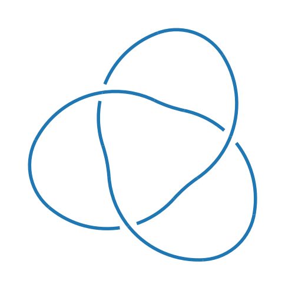
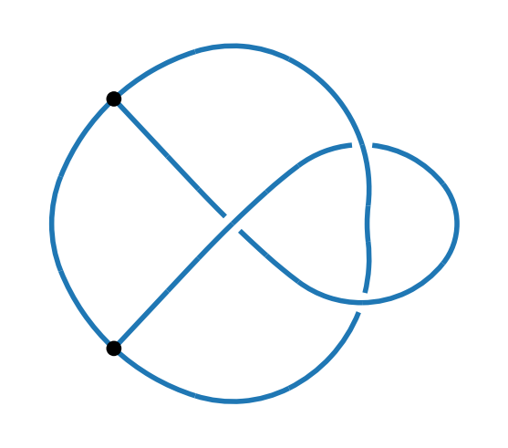
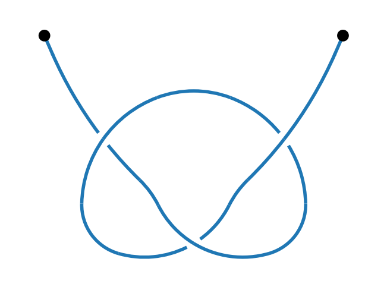
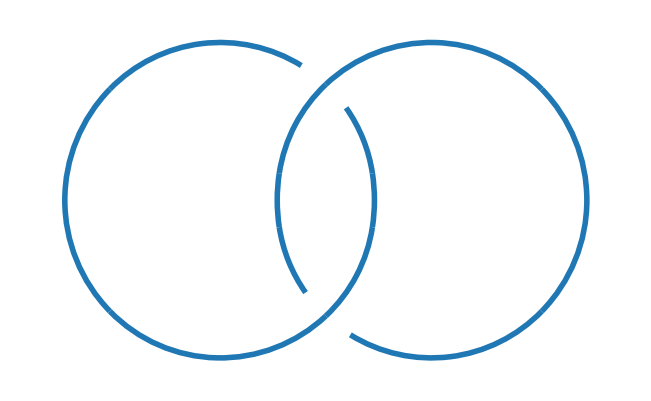
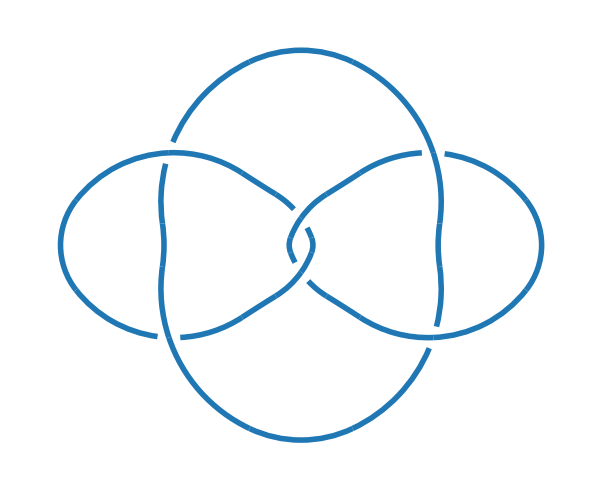
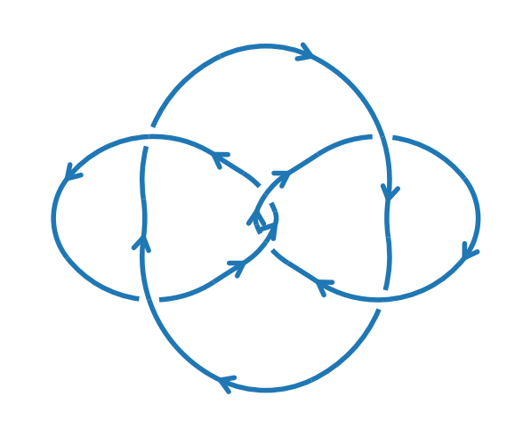

Tutorial (test)#
Step-by-step tutorial introducing KnotPy, from installation to constructing knots, links, and computing invariants.
Your first knot#
Create the (unoriented) trefoil knot and draw it.
import knotpy as kp
k = kp.knot("3_1")
kp.draw(k)

k.name
'3_1'
kp.identify(k)
'3_1'
kp.jones(k)
\[\displaystyle - t^{4} + t^{3} + t\]
k = kp.knot("trefoil")
kp.identify(k)
'3_1'
k = kp.knot("+3_1")
kp.identify(k)
'+3_1'
Input/Output#
PD code#
k = kp.from_pd_notation("X(4,2,5,1),X(8,6,1,5),X(6,3,7,4),X(2,7,3,8)")
kp.identify(k)
'4_1'
k = kp.from_pd_notation("PD[X[4, 2, 5, 1], X[8, 6, 1, 5], X[6, 3, 7, 4], X[2, 7, 3, 8]]")
kp.identify(k)
'4_1'
k = kp.from_pd_notation([[4,2,5,1],[8,6,1,5],[6,3,7,4],[2,7,3,8]])
kp.identify(k)
'4_1'
kp.to_pd_notation(k)
'X[0,1,2,3],X[4,5,3,2],X[5,6,7,0],X[1,7,6,4]'
k = kp.from_pd_notation("V[1,2,3],V[1,4,5],X[2,6,7,8],X[8,9,4,3],X[9,7,6,5]")
kp.draw(k)

k = kp.from_pd_notation("V[1,2,3],V[1,4,5],X[2,6,7,8],X[8,9,4,3],X[9,7,6,5]")
kp.draw(k)
k = kp.from_pd_notation("V[1],X[1,5,2,4],X[3,7,4,6],X[5,3,6,2],V[7]")
kp.draw(k)
0.25 False
0.25 False

k = kp.from_pd_notation("X[4,1,3,2],X[1,4,2,3]")
kp.draw(k)

k = kp.from_pd_notation("X[4,1,3,2],X[1,4,2,3]")
kp.sanity_check(k)
True
k = kp.from_pd_notation("X[4,1,3,2],X[1,3,2,4]")
kp.sanity_check(k)
False
EM code#
EM code#
EM code#
Plantri code#
Native KnotPy code#
Canonical form#
Inport/Export#
Drawing#
Operations#
Connected sum#
k31 = kp.knot("3_1")
k41 = kp.knot("4_1")
k_sum = kp.connected_sum(k31, k41)
kp.is_connected_sum(k_sum)
True
a, b = kp.connected_sum_decomposition(k_sum)
kp.identify(a), kp.identify(b)
('3_1', '4_1')
Disjoint union#
k_union = kp.disjoint_union(k31, k41)
kp.is_disjoint_union(k_union)
True
a, b = kp.disjoint_union_decomposition(k_union)
kp.identify(a), kp.identify(b)
('3_1', '4_1')
Symmetry#
k = kp.knot("3_1")
kp.symmetry_type(k)
'reversible'
kp.symmetry_type("9_32")
'chiral'
[k.name for k in kp.knots(range(10)) if kp.symmetry_type(k) == "chiral"]
['9_32', '9_33']
for n in range(9, 12):
print("There are", len([k for k in kp.knots(n) if kp.symmetry_type(k) == "chiral"]), "chiral knots with", n, "crossings.")
There are 2 chiral knots with 9 crossings.
There are 27 chiral knots with 10 crossings.
There are 187 chiral knots with 11 crossings.
Mirror#
k = kp.knot("3_1")
k_mirror = kp.mirror(k)
kp.identify(k_mirror)
'3_1*'
k = kp.knot("4_1")
k_mirror = kp.mirror(k)
kp.identify(k_mirror)
'4_1'
Orientation#
k = kp.knot("3_1")
k_oriented = kp.orient(k)
kp.identify(k_oriented)
'+3_1'
k_unoriented = kp.unorient(k)
kp.identify(k_unoriented)
'3_1'
k = kp.knot("+3_1")
k_reversed = kp.reverse(k)
kp.identify(k_reversed)
'+3_1'
k = kp.knot("+8_17")
k_reversed = kp.reverse(k)
kp.identify(k_reversed)
'-8_17'
k = kp.knot("L6a5")
kp.draw(k)

k = kp.knot("L6a5+--")
kp.draw(k)

k = kp.knot("L6a5")
kp.number_of_link_components(k)
3
k_orientations = kp.orientations(k)
len(k_orientations)
8
Flip#
k = kp.from_pd_notation("V[1],X[1,5,2,4],X[3,7,4,6],X[5,3,6,2],V[7]")
k_flipped = kp.flip(k)
kp.canonical(k) == kp.canonical(k_flipped)
True
Invariants#
Knot and link invariants#
k = kp.knot("3_1")
print("Knot:", k.name)
print("Jones polynomial:", kp.jones(k))
print("Alexander polynomial:", kp.alexander(k))
print("Bracket polynomial:", kp.bracket(k, normalize=True))
print("HOMFLYPT polynomial:", kp.homflypt(k))
print("HOMFLYPT polynomial (az):", kp.homflypt(k, variables="az"))
print("HOMFLYPT polynomial (lm):", kp.homflypt(k, variables="lm"))
print("HOMFLYPT polynomial (xyz):", kp.homflypt(k, variables="xyz"))
print("Kauffman 2-variable polynomial:", kp.kauffman(k))
Knot: 3_1
Jones polynomial: -t**4 + t**3 + t
Alexander polynomial: t**2 - t + 1
Bracket polynomial: A**(-4) + A**(-12) - 1/A**16
HOMFLYPT polynomial: -v**4 + v**2*z**2 + 2*v**2
HOMFLYPT polynomial (az): z**2/a**2 + 2/a**2 - 1/a**4
HOMFLYPT polynomial (lm): m**2/l**2 - 2/l**2 - 1/l**4
HOMFLYPT polynomial (xyz): -2*y/x - y**2/x**2 + z**2/x**2
Kauffman 2-variable polynomial: a**5*z + a**4*z**2 - a**4 + a**3*z + a**2*z**2 - 2*a**2
k = kp.knot("3_1")
print("Knot:", k.name)
print("Writhe:", kp.writhe(k))
print("Bracket polynomial:", kp.bracket(k, normalize=True))
print("Jones polynomial:", kp.jones(k))
print("Conway polynomial:", kp.conway(k))
print("Alexander polynomial:", kp.alexander(k))
print("HOMFLYPT polynomial:", kp.homflypt(k))
print("HOMFLYPT polynomial (az):", kp.homflypt(k, variables="az"))
print("HOMFLYPT polynomial (lm):", kp.homflypt(k, variables="lm"))
print("HOMFLYPT polynomial (xyz):", kp.homflypt(k, variables="xyz"))
print("Kauffman 2-variable polynomial:", kp.kauffman(k))
Knot: 3_1
Writhe: 3
Bracket polynomial: A**(-4) + A**(-12) - 1/A**16
Jones polynomial: -t**4 + t**3 + t
Conway polynomial: z**2 + 1
Alexander polynomial: t**2 - t + 1
HOMFLYPT polynomial: -v**4 + v**2*z**2 + 2*v**2
HOMFLYPT polynomial (az): z**2/a**2 + 2/a**2 - 1/a**4
HOMFLYPT polynomial (lm): m**2/l**2 - 2/l**2 - 1/l**4
HOMFLYPT polynomial (xyz): -2*y/x - y**2/x**2 + z**2/x**2
Kauffman 2-variable polynomial: a**5*z + a**4*z**2 - a**4 + a**3*z + a**2*z**2 - 2*a**2
k = kp.knot("+3_1")
g = kp.fundamental_group(k)
g.generators, g.relators
((x0, x1, x2), [x0*x1*x2**-1*x1**-1, x1*x2*x0**-1*x2**-1, x2*x0*x1**-1*x0**-1])
k = kp.knot("L6a_1++")
kp.multivariable_alexander(k)
\[\displaystyle 2 t_{1} t_{2} - t_{1} - t_{2} + 2\]
.....
Cell In[41], line 1
.....
^
SyntaxError: invalid syntax
Spatial (knotted) graph invariants#
k = kp.from_pd_notation("V[1,2,3],V[1,4,5],X[2,6,7,8],X[8,9,4,3],X[9,7,6,5]")
#kp.unplugging()
kp.yamada(k)
k_oriented = kp.orient(k)
g = kp.fundamental_group(k_oriented)
g.generators, g.relators
g = kp.wheel_graph(5)
kp.tutte(g)
Knotoid and linkoid invariants#
k = kp.from_pd_notation("V[1],X[1,5,2,4],X[3,7,4,6],X[5,3,6,2],V[7]")
k.name = "k3_1"
print("Knotoid:", k.name)
print("Affine index polynomial:", kp.affine_index_polynomial(k))
print("Arrow polynomial:", kp.arrow_polynomial(k))
print("Mock Alexander polynomial", kp.mock_alexander_polynomial(k))
print("Kauffman bracket skein module:", kp.kauffman_bracket_skein_module(k, normalize=True))
k_closure = kp.closure(k, over=True, under=True)
kp.yamada(k_closure)
Reidemesiter moves#
Simplifying a diagram#
culprit_unknot =kp.knot("culprit")
kp.draw(culprit_unknot)
kp.identify(culprit_unknot)
k = kp.simplify(culprit_unknot)
len(k.crossings)
kp.is_unknot(k)
goeritz_unknot = kp.knot("goeritz")
kp.draw(goeritz_unknot)
kp.identify(goeritz_unknot)
k = kp.simplify(goeritz_unknot)
len(k.crossings)
k = kp.simplify(goeritz_unknot, depth=2, flype=True)
len(k.crossings)
Reidemeister moves#
Reidemeister moves#
Diagram attributes#
kp.is_knot(K)
%%sql
K = kp.knot("unknot")
K.name
K = kp.knot("+3_1")
K.is_oriented()
K_ = kp.knot("-3_1")
kp.identify(kp.knot("-3_1"))
K = kp.knot("3_1")
print("Knot:", K.name)
print("Jones polynomial:", kp.jones(K))
print("Alexander polynomial:", kp.alexander(K))
print("Bracket polynomial:", kp.bracket(K, normalize=True))
print("HOMFLYPT polynomial:", kp.homflypt(K))
print("HOMFLYPT polynomial (az):", kp.homflypt(K, variables="az"))
print("HOMFLYPT polynomial (lm):", kp.homflypt(K, variables="lm"))
print("HOMFLYPT polynomial (xyz):", kp.homflypt(K, variables="xyz"))
print("Kauffman 2-variable polynomial:", kp.kauffman(K))
K = kp.knot("+3_1")
G = kp.fundamental_group(K)
G.generators, G.relators
K = kp.from_pd_notation("[[1,5,2,4],[3,1,4,6],[5,3,6,2]]")
kp.identify(K)
K = kp.from_pd_notation("PD[X[1,9,2,8], X[3,10,4,11], X[5,3,6,2],X[7,1,8,12], X[9,4,10,5], X[11,7,12,6]]")
kp.identify(K)
kp.to_pd_notation(kp.knot("3_1"))
# EM, CONDENSED EM,... PLANTRI
K = kp.knot("3_1")
kp.identify(kp.orient(K))
[kp.identify(K) for K in kp.orientations(kp.knot("9_32"))]
K = kp.knot("3_1")
kp.identify(kp.mirror(K))
K = kp.knot("+9_32")
kp.identify(kp.reverse(K))
K = kp.knot("+9_32")
K = kp.mirror(kp.reverse(K))
kp.identify(K)